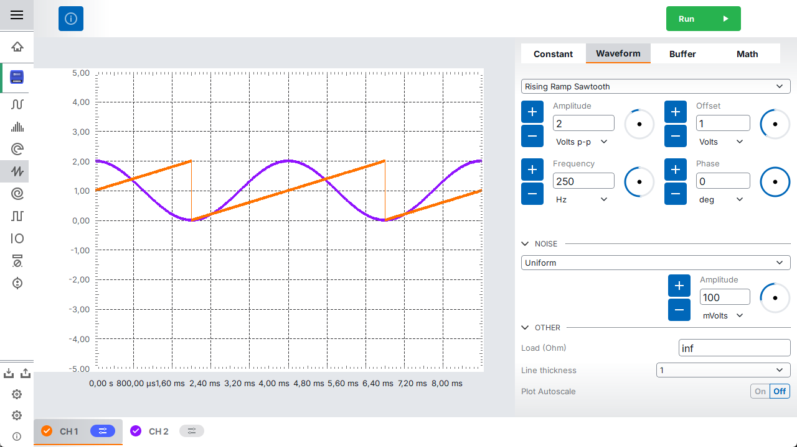
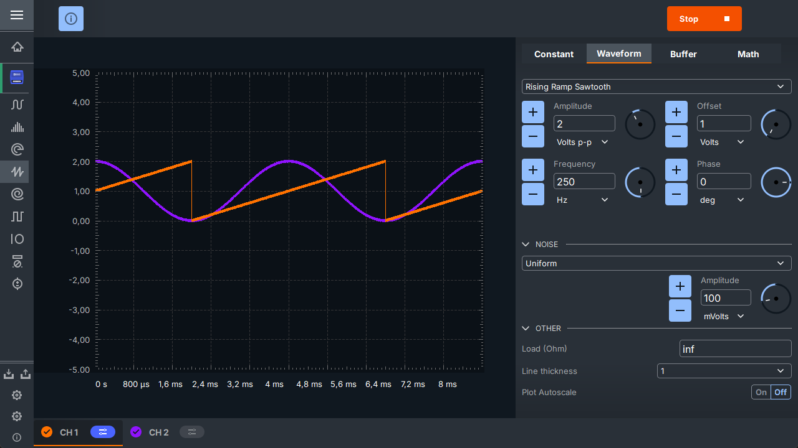

Scopy
Analog Devices Inc. Scopy is a multi-functional software toolset with strong capabilities for signal analysis.


Note
We are in the process of moving the Scopy documentation from wiki to ADI Scopy repository.
We apologize for any inconvenience that may occur due to this migration.
Contents
- Scopy Overview
- Plugins
- Contents
- ADC plugin
- DAC plugin
- Datalogger
- Debugger
- Register Map
- ADALM2000
- PQM
- AD-SWIOT1L-SL plugin
- AD936x
- AD9371 / AD9375
- APOLLO
- ADRV9002 (Jupiter) Plugin
- ADRV9009 Plugin
- FMCOMMS11
- CN0357
- DAQ2
- AD6676
- JESD Status
- Scripting Tool
- Features
- How Script Execution Works
- Scripting Examples
- Command Line Scripting
- Supported Commands
- General
- ADALM2000: DigitalIO
- ADALM2000: Power Supply
- ADALM2000: Voltmeter
- ADALM2000: Signal Generator
- ADALM2000: Network Analyzer
- ADALM2000: Oscilloscope
- ADALM2000: Pattern Generator
- ADALM2000: Logic Analyzer
- ADALM2000: Spectrum Analyzer
- RegMap API
- DataLogger API
- IIO Explorer (Debugger) API
- PQM API
- SWIOT API
- IMU Analyzer
- RF Power Meter
- CN0540
- CN0511
- Contents
- Scopy developer guide
- About
- Contents
- Style Tutorial
- Package Generator
- Plugin Developer Guide
- Using Connection Provider
- How Do We Determine When the Plugin Will Show (Compatibility Condition)
- How to Filter Between Compatible Plugins
- Setting Tool Icon and Title
- How to Add Resources
- How to Create / Edit Preferences for the Plugin
- How to Add Compatible Plugins
- Useful Tools
- IIOWidgets
- Menu UI Items
- How to Create a Device Icon
- How to Create a Tutorial for Your Plugin
- Conclusion
- Test Cases
- Current reports
- Contents
- Testing Guide
- Plugins Test Cases
- General Test Cases
- Contents
- Homepage
- Test 1: The homepage displays correctly when running the application.
- Test 2: Verifying the “Add device” (+) button.
- Test 3: Verifying the auto-scan feature (ON).
- Test 4: Verifying the auto-scan feature (OFF).
- Test 5: Verifying the manual scan feature.
- Test 6: Navigation using the buttons in the info page.
- Test 7: Auto-scan behavior when the device is unplugged.
- License and About Page
- Installers
- Add device
- Setup environment:
- Test 1: Verifying the device scanning functionality.
- Test 2: Verifying the local device scanning functionality.
- Test 3: Verifying the ip device scanning functionality.
- Test 4: Verifying the usb device scanning functionality.
- Test 5: Verifying the serial device scanning functionality.
- Test 6: Scanning with no device.
- Test 7: Device validation.
- Test 8: Verify the “BACK” button from compatible plugin page.
- Test 9: Verify the “ADD DEVICE” button from compatible plugin page (single plugin).
- Test 10: Verify the “ADD DEVICE” button from compatible plugin page (multiple plugins).
- Test 11: Verify the “ADD DEVICE” button from compatible plugin page with no plugin selected.
- Connection flow
- EMU
- Test 1: Enable the emulator.
- Test 2: EMU is not installed.
- Test 3: Disable the emulator.
- Test 4: Disable the emulator while the emulated device is connected.
- Test 5: Verify adalm2000 emu device.
- Test 6: Verify pluto emu device.
- Test 7: Verify pqm emu device.
- Test 8: Verify swiot_config emu device.
- Test 9: Verify swiot_runtime emu device.
- Test 10: Verify generic emu device.
- Device interaction
- Setup environment:
- Test 1: Verifying the device button.
- Test 2: Remove a device from device browser.
- Test 3: Remove a device from device browser while it is connected.
- Test 4: Edit the name of the device.
- Test 5: Select a tool.
- Test 6: Detach a tool.
- Test 7: Reopen the app with a detached tool.
- Test 8: Collapse device tools in the tool menu.
- Test 9: Connecting to multiple devices.
- Test 10: Resource manager with multiple devices.
- Test 11: Devices order in device browser.
- Test 12: Device page tabbed interface.
- Test 13: Device reload with plugin changes.
- Instrument Detaching - Test Suite
- General Preferences - Test Suite
- Setup environment:
- Test 1 - Save/Load Scopy session
- Test 2 - Double click to attach/detach tool
- Test 3 - Save/Load tool attached state
- Test 4 - Double click control buttons to open menu
- Test 5 - Enable OpenGL plotting
- Test 6 - Enable menu animations
- Test 7 - Enable the status bar for displaying important messages
- Test 8 - Show Grid
- Test 9 - Show Graticule
- Test 10 - Use Lazy Loading
- Test 11 - Use native dialogs
- Test 12 - Auto-connect to previous session
- Test 13 - Font scale
- Test 14 - Theme
- Test 15 - Language
- Test 16 - Connect to multiple devices
- Test 17 - Regularly scan for new devices
- Test 18 - Session devices
- Test 19 - Show plot FPS
- Test 20 - Plot target FPS
- Test 21 - Reset settings and plugins to default
- Package Manager - Test Suite
- Scripting Tool - Test Suite
- Test 1: Enabling the scripting tool from Preferences
- Test 2: Scripting tool loads successfully in Scopy
- Test 3: User can run a script
- Test 4: User can save a script
- Test 5: User can load a script
- Test 6: Output/results are displayed in the scripting tool’s output panel
- Test 7: Integration with other Scopy plugins
- Homepage
- Contents
- Software Architecture
- Scopy Preferences
- Reporting a Bug
- Scopy troubleshooting guide
- Scopy v2 after Scopy v1?
- Scopy v1 ini files in Scopy v2
- Any unexpected behavior? Send us the log!
- Linux Wayland crash
- Device doesn’t show up
- Use compliant USB cable
- Reinstall & INI files
- Connecting through the network interface
- Make sure you have the latest firmware
- Uninstall and reinstall the software
- Make sure the system doesn’t limit the USB power consumption
- Run iio_info -a for board diagnostics
- Emulator not found
- Scopy white screen on Windows